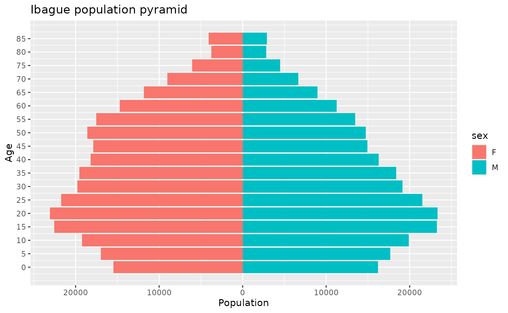

Analyzing demographic data with epiCo
Source:vignettes/demographic_vignette.Rmd
demographic_vignette.RmdepiCo’s demographic module is a tool for demographic descriptive analysis and risk assessment of epidemiological events in Colombia. Based on linelist data provided by the Colombian National Surveillance System (SIVIGILA) and demographic data from the Colombian National Administrative Department of Statistics (DANE).
The module allows you to:
- Consult and visualize the population pyramid of a municipality, department, or country for a year of interest.
- Consult the definitions of demographic variables such as ethnicities, special population groups, and occupational labels.
- Estimate the distribution of occupations reported in the line list according to the ISCO 88 Standard.
- Estimate the incidence rate of a municipality, department, or country.
- Calculate and visualize a relative age risk by normalizing the distribution of cases by the specific age structure of the location of interest.
In the following vignette, you will learn how to:
- Navigate the Codification of the Political Administrative Division of Colombia (DIVIPOLA).
- Consult, visualize, and interpret Colombian population pyramids at different administrative levels.
- Interpret the demographic variables reported by the SIVIGILA (as ethnicities, special population groups, and occupational labels).
- Understand the typical SIVIGILA epidemiological data.
- Estimate weekly and monthly incidence rates for a municipality, department, or country.
- Integrate the age distributions of cases with population pyramids to obtain an age-risk assessment for a disease.
1. Navigating the Codification of the Political Administrative Division of Colombia (DIVIPOLA)
DIVIPOLA is a standardized nomenclature designed by the DANE for the identification of territorial entities (departments, districts, and municipalities), non-municipalized areas, and populated centers by assigning a unique numerical code to each of these territorial units.
Colombia has:
- 32 Departments (Administrative Division Level 1)
- 1102 Municipalities (Administrative Division Level 2)
- 1 Island
- 18 Non-municipalized areas
- 6678 Populated centers
Two digits are used for the codification of departments, and five digits are used for the codification of municipalities (the first two being the department where they are located).
epiCo provides the complete list of departments and municipalities codes through a built-in dataset.
2. Population pyramids
epiCo provides a built-in dataset with the population projections of Colombia at the national, departmental, and municipality levels (provided by the DANE). These datasets contains the population projections from 2012 to 2024 for ages from 0 to 100 years. However, for the municipal projections it has the ages from 0 to over 85 years old.
Users can perform queries on this data by using the
population_pyramid function, providing the DIVIPOLA code of
the territory of interest and the year to consult.
ibague_code <- "73001" # DIVIPOLA code for the city of Ibagu<U+00E9>
year <- 2016 # Year to consult
ibague_pyramid_2016 <- population_pyramid(ibague_code, year) # Population
# pyramid (dataframe) for the city of Ibagu<U+00E9> in the year 2019
# dissagregated by sex
head(ibague_pyramid_2016)
#> age population sex
#> 1 0 15839 F
#> 2 5 17539 F
#> 3 10 20171 F
#> 4 15 23059 F
#> 5 20 22659 F
#> 6 25 20685 FDefinitions of age ranges and plotting are also provided for both: total number of individuals, or proportion of individuals
ibague_code <- "73001" # DIVIPOLA code for the city of Ibagu<U+00E9>
year <- 2019 # Year to consult
age_range <- 5 # Age range or window
ibague_pyramid_2019 <- population_pyramid(ibague_code, year,
range = age_range,
sex = TRUE, total = TRUE,
plot = TRUE, language = "EN"
)
3. Demographic variables
Events of epidemiological relevance are reported to the SIVIGILA using an official notification form (see link).
epiCo provides a function to consult the dictionaries for the ethnicity categories, special population groups, and occupation codifications used by the SIVIGILA.
demog_data <- data.frame(
id = c(0001, 002, 003, 004, 005, 006, 007),
ethnicity_label = c(3, 4, 2, 3, 3, 3, 2),
occupation_label = c(6111, 3221, 5113, 5133, 6111, 23, 25),
sex = c("F", "M", "F", "F", "M", "M", "F"),
stringsAsFactors = FALSE
)
# Description of ethnicities
describe_ethnicity(demog_data$ethnicity_label, language = "EN")
#> code
#> 1 2
#> 2 3
#> 3 4
#> description
#> 1 They are communities that have their own ethnic and cultural identity; They are characterized by a nomadic tradition, and have their own language, which is Romanesque
#> 2 Population located in the Archipelago of San Andres, Providencia and Santa Catalina, with Afro-Anglo-Antillean cultural roots, whose members have clearly differentiated sociocultural and linguistic traits from the rest of the Afro-Colombian population
#> 3 Population located in the municipality of San Basilio de Palenque, department of Bolivar, where palenquero is spoken, a Creole language
# reported in the consulted dataset
describe_occupation(
isco_codes = demog_data$occupation_label,
sex = demog_data$sex,
plot = "treemap"
) # Description of the occupations
#> 1codes are invalid.
#> $data
#> major major_label sub_major
#> 1 5 Service Workers and Shop and Market Sales Workers 51
#> 2 5 Service Workers and Shop and Market Sales Workers 51
#> 3 6 Skilled Agricultural and Fishery Workers 61
#> 4 2 Professionals 23
#> 5 3 Technicians and Associate Professionals 32
#> 6 6 Skilled Agricultural and Fishery Workers 61
#> 7 NA <NA> NA
#> sub_major_label minor
#> 1 Personal and Protective Services Workers 511
#> 2 Personal and Protective Services Workers 513
#> 3 Market-Oriented Skilled Agricultural and Fishery Workers 611
#> 4 Teaching Professionals NA
#> 5 Life Science and Health Associate Professionals 322
#> 6 Market-Oriented Skilled Agricultural and Fishery Workers 611
#> 7 <NA> NA
#> minor_label unit
#> 1 Travel Attendants and Related Workers 5113
#> 2 Personal Care and Related Workers 5133
#> 3 Market Gardeners and Crop Growers 6111
#> 4 <NA> NA
#> 5 Modern Health Associate Professionals (Except Nursing) 3221
#> 6 Market Gardeners and Crop Growers 6111
#> 7 <NA> NA
#> unit_label sex count
#> 1 Travel guides F 1
#> 2 Home-based personal care workers F 1
#> 3 Field crop and vegetable growers F 1
#> 4 <NA> M 1
#> 5 Medical assistants M 1
#> 6 Field crop and vegetable growers M 1
#> 7 <NA> <NA> 1
#>
#> $plot
# reported in the consulted dataset4. Epidemiological data
epiCo is a tool that produces analyses based on
epidemiological data extracted from SIVIGILA or provided by the user.
epi_data is a built-in file that shows an example of the
structure used by the package, which is the same as the one reported by
SIVIGILA. This file contains the cases of all the municipalities in
Tolima for the years 2015-2021.
The following analyses use the dengue cases reported in Tolima in 2019.
data("epi_data")
data_tolima <- epi_data[lubridate::year(epi_data$fec_not) == 2019, ]
head(data_tolima)
#> # A tibble: 6 × 16
#> fec_not cod_pais_o cod_dpto_o cod_mun_o cod_pais_r cod_dpto_r cod_mun_r
#> <chr> <chr> <chr> <chr> <chr> <chr> <chr>
#> 1 2019-01-02 170 73 73001 170 73 73001
#> 2 2019-01-15 170 73 73268 170 73 73268
#> 3 2019-01-01 170 73 73200 170 73 73200
#> 4 2019-01-12 170 73 73671 170 73 73671
#> 5 2019-01-05 170 73 73671 170 73 73671
#> 6 2019-01-05 170 73 73671 170 25 25754
#> # ℹ 9 more variables: cod_dpto_n <chr>, cod_mun_n <chr>, edad <dbl>,
#> # sexo <chr>, per_etn <dbl>, ocupacion <chr>, estrato <chr>, ini_sin <chr>,
#> # cod_eve <dbl>5. Estimation of incidence rates
The incidence rate feature of epiCo requires the incidence package to produce a modified incidence object. Instead of a count vector (or matrix), it transforms the object to provide a rate element accounting for the number of cases in the time period divided by the total number of inhabitants in the specific region and year.
epiCo uses the DANE population projections as denominators; therefore, it is necessary to provide the administration level at which incidences are calculated.
incidence_object <- incidence(
dates = data_tolima$fec_not,
groups = data_tolima$cod_mun_o,
interval = "1 epiweek"
)
incidence_rate_object <- incidence_rate(incidence_object, level = 2)
head(incidence_rate_object$counts)
#> 73001 73024 73026 73030 73043 73055 73067 73124 73148 73152 73168 73200
#> [1,] 12 1 1 0 0 0 1 0 0 0 1 1
#> [2,] 12 0 1 1 0 1 0 0 1 0 16 0
#> [3,] 17 1 1 0 0 1 2 0 0 0 4 0
#> [4,] 15 0 1 0 0 3 0 0 2 0 10 0
#> [5,] 23 0 1 0 0 1 0 0 0 0 15 0
#> [6,] 30 0 1 0 0 0 0 0 0 0 9 0
#> 73217 73226 73236 73268 73270 73275 73283 73319 73349 73352 73408 73411
#> [1,] 0 2 0 21 0 7 3 0 0 0 5 0
#> [2,] 1 1 0 18 0 16 2 2 0 0 5 2
#> [3,] 1 1 0 30 0 19 1 2 2 0 4 2
#> [4,] 0 0 0 14 0 18 1 2 0 0 6 2
#> [5,] 3 3 0 30 0 14 0 3 1 0 5 0
#> [6,] 4 2 0 36 0 15 1 1 0 0 5 4
#> 73443 73449 73461 73483 73504 73520 73547 73555 73563 73585 73616 73622
#> [1,] 2 2 0 1 1 0 0 0 0 0 1 0
#> [2,] 5 4 0 4 1 1 0 0 0 1 1 0
#> [3,] 5 7 0 1 1 0 0 1 0 1 0 0
#> [4,] 6 10 0 4 1 0 0 0 0 3 0 0
#> [5,] 6 11 0 3 1 0 1 0 0 1 0 0
#> [6,] 16 4 0 0 1 2 1 1 0 3 2 0
#> 73624 73671 73675 73678 73686 73770 73854 73861 73870 73873
#> [1,] 1 8 0 1 0 1 1 0 0 0
#> [2,] 0 13 0 0 0 0 0 1 0 0
#> [3,] 2 5 0 2 0 0 0 1 0 0
#> [4,] 1 9 0 0 0 0 0 0 0 0
#> [5,] 1 9 0 0 0 1 0 0 0 0
#> [6,] 0 4 0 1 0 2 0 1 0 0If groups in the incidence object are not within the DIVIPOLA coding for municipalities (level 2) or departments (level 1), or a national estimation is intended (level 0), the function will not be able to estimate an incidence rate.
6. Estimation of risk by age group
Normalization of data is a key aspect of epidemiology. epiCo allows for the age distribution of cases and normalizes the epidemiological data with the age structure of a population. This normalization allows us to estimate the age risk of a disease according to the age structure of the general population in a municipality, department, or country in a certain year.
data_ibague <- data_tolima[data_tolima$cod_mun_o == 73001, ]
age_risk_data <- age_risk(
age = as.integer(data_ibague$edad),
population_pyramid = ibague_pyramid_2019$data,
sex = data_ibague$sexo, plot = TRUE, language = "EN"
)